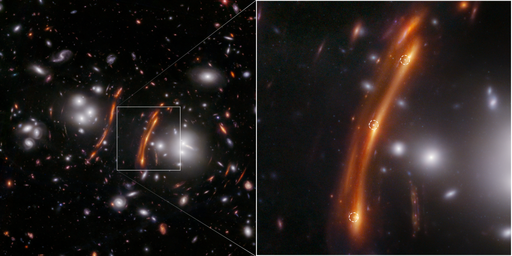
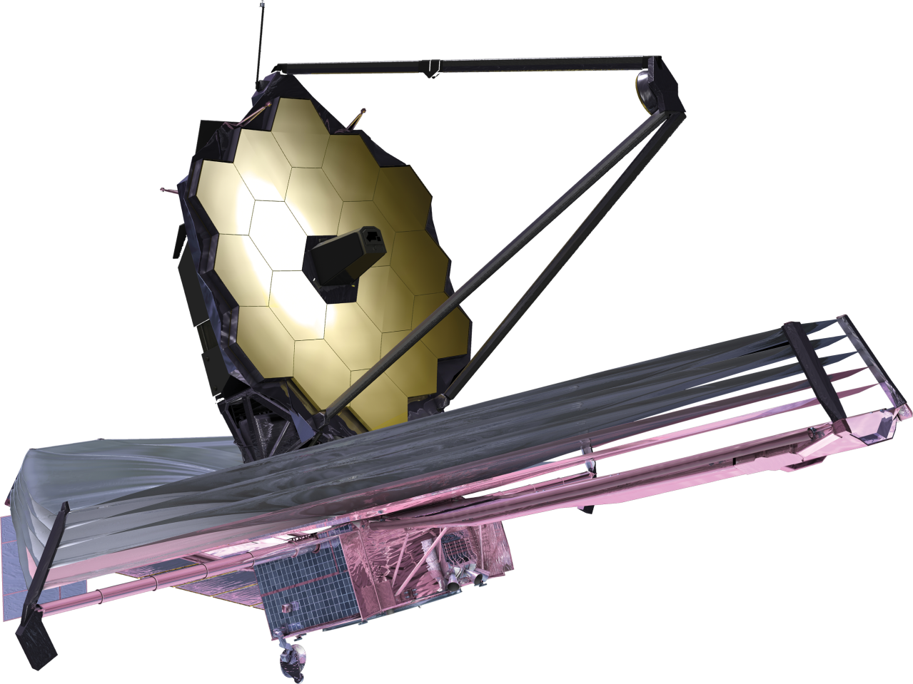

Webb estuda cada fase da história do nosso Universo, desde os primeiros brilhos luminosos após o Big Bang, até a formação de sistemas solares capazes de suportar vida em planetas como a Terra, até a evolução do nosso próprio Sistema Solar. Webb foi lançado em 25 de dezembro de 2021. Ele não orbita ao redor da Terra como o Telescópio Espacial Hubble, ele orbita o Sol a 1,5 milhão de quilômetros (1 milhão de milhas) de distância da Terra no que é chamado de segundo ponto de Lagrange ou L2.
Principais Fatos
Telescópio de estreia da próxima década
Ampliando as descobertas tentadoras do Telescópio Espacial Hubble.

Design dobrável
Tão grande que precisa ser dobrado no estilo origami para caber no foguete e se desdobra como um “Transformer” no espaço.
ÚLTIMO BLOG DO WEBB
Pesquisadores do Webb descobrem supernova com lente e confirmam tensão de Hubble
Medir a constante de Hubble, a taxa na qual o universo está se expandindo, é uma área ativa de pesquisa entre astrônomos ao redor do mundo que analisam dados de observatórios terrestres e espaciais. O Telescópio Espacial James Webb da NASA já contribuiu para essa discussão em andamento. No início deste ano , astrônomos usaram dados do Webb contendo variáveis Cefeidas e supernovas Tipo Ia, marcadores de distância confiáveis para medir a taxa de expansão do universo, para confirmar as medições anteriores do Telescópio Espacial Hubble da NASA.
SOBRE
A Missão Webb
Webb é o principal observatório da próxima década, servindo milhares de astrônomos em todo o mundo. Ele estuda cada fase da história do nosso Universo, desde os primeiros brilhos luminosos após o Big Bang, até a formação de sistemas solares capazes de suportar vida em planetas como a Terra, até a evolução do nosso próprio Sistema Solar.

Esta é uma foto de um dos segmentos primários do espelho do Telescópio Espacial James Webb revestido com ouro pela Quantum Coating Incorporated. NÃO é um segmento de voo, é a unidade de projeto de engenharia. A foto foi tirada no BATC por Drew Noel.
VEJA TAMBÉM
Metas científicas de Webb
O Telescópio Espacial James Webb é um salto gigante em nossa busca para entender o Universo e nossas origens. Webb está examinando cada fase da história cósmica: dos primeiros brilhos luminosos após o Big Bang à formação de galáxias, estrelas e planetas, até a evolução do nosso próprio sistema solar. Aprenda sobre os 4 principais temas científicos para Webb.

NAVE JAMES
A nave espacial
O Telescópio Espacial Webb é o maior, mais poderoso e mais complexo telescópio já lançado ao espaço. Sua história de design e desenvolvimento remonta a antes do lançamento do Telescópio Espacial Hubble. Aprenda sobre o design, os principais componentes e subsistemas do Webb e veja o Webb em 3D em um Sistema Solar 3D.
SOBRE
A Equipe Internacional Webb
Webb é para o mundo e do mundo. Milhares de cientistas, engenheiros e técnicos qualificados de 14 países (e mais de 29 estados dos EUA e Washington, DC) contribuíram para o design, construção, teste, integração, lançamento, comissionamento e operações do Webb. É uma missão conjunta NASA/ESA/CSA. A montagem e o teste do espelho e dos instrumentos ocorreram na NASA Goddard (GSFC).
SOBRE
Quanto tempo levou para Webb atingir sua órbita?
Webb orbita em torno do segundo ponto de Lagrange (L2) , que fica a cerca de 1 milhão de milhas (1,5 milhão de km) de distância da Terra, e levou cerca de um mês para percorrer essa distância. Durante a viagem para L2, Webb foi totalmente implantado, resfriado até sua temperatura operacional, e seus sistemas começaram a ser verificados e ajustados. Esses procedimentos de verificação continuaram até 6 meses após o lançamento, quando as operações científicas de rotina começaram.
Quando o Webb foi lançado?
O Webb foi lançado em 25 de dezembro de 2021 às 7h20 (12h20 UTC).
Como o Webb foi lançado?
O Webb foi lançado em um foguete Arianespace Ariane 5 ECA. O veículo de lançamento foi parte da contribuição europeia para a missão.
Quanto tempo durará a missão Webb?
O Webb foi projetado para uma missão de pelo menos cinco anos, com uma meta de 10 anos. No entanto, após um lançamento bem-sucedido e a conclusão do comissionamento do telescópio, a equipe do Webb determinou que o observatório deveria ter propelente suficiente para permitir o suporte de operações científicas em órbita por mais de 20 anos de vida útil científica. Outros fatores podem limitar a vida útil da missão, como a possibilidade de que o hardware do Webb se degrade ao longo do tempo no ambiente hostil do espaço. No entanto, como vimos com missões como o Telescópio Espacial Hubble e o Observatório de Raios X Chandra, as espaçonaves frequentemente continuam operando anos além da vida útil projetada da missão.
Sobre o Telescópio
Revelando as belezas do cosmos.
Uma janela para o passado: observando as primeiras.